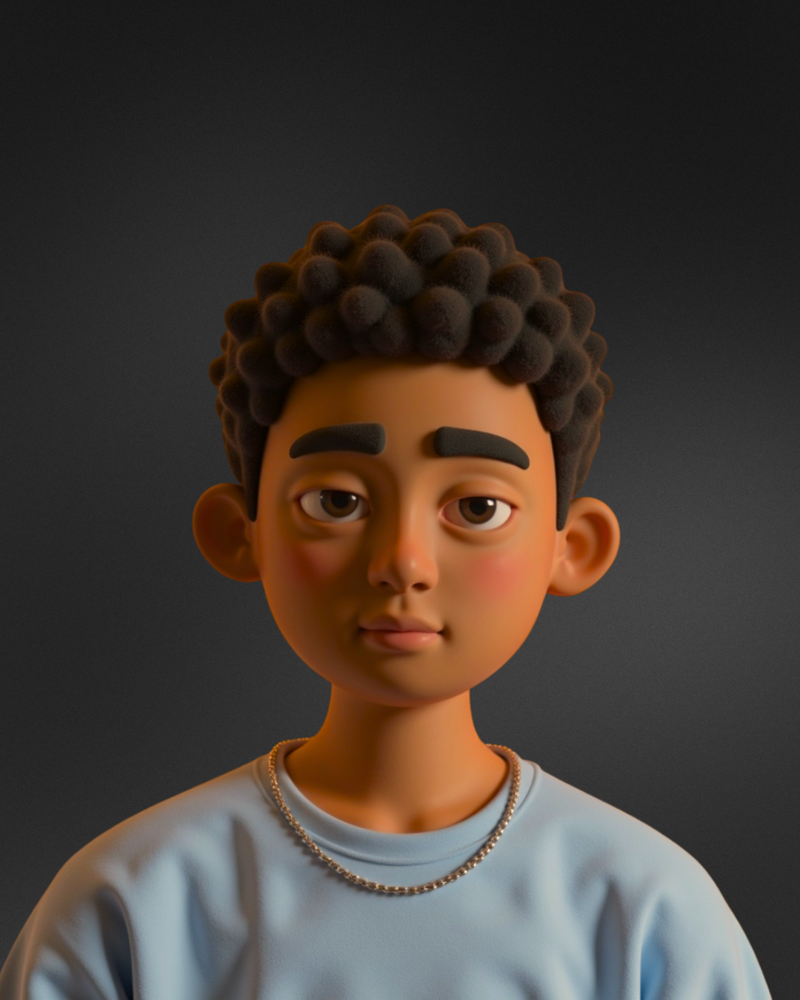

Graphic / Product
& Brand Designer
Disponível para freelas

espaço reservado pro seu vídeo 3D— —
ferramentas do dia a dia
Design que resolve, ilustração que conta história e editorial que se lê bem…
Design não é só imagem, cor e tipografia — é um jeito de comunicar ideia, identificar problema real e entregar solução para quem precisa. Vim do editorial, onde cada página tem que funcionar até para quem não enxerga, e levo esse rigor para tudo: da campanha de rede social ao livro didático que vai parar na mão de milhares de alunos.
o que eu faço
Uma seleção do que eu venho construindo — editorial, campanha e ilustração. Clique em um card para abrir o projeto completo.
MEUS TRABALHOS
roda sozinho · arraste para o lado · clique para abrir
Meus arquivos
Tudo organizado por pasta, do jeito que fica no computador. Clique para abrir.
Sobre mim
—
Trabalhei quatro anos numa fundação de inclusão de pessoas com deficiência visual, ilustrando e diagramando material didático para o PNLD. Foi lá que aprendi a projetar pensando em quem vai receber a peça, não em quem faz. Depois disso passei por campanha política, educação e freela — e levei esse jeito de trabalhar para todo canto.
Gosto de demanda simultânea, cronograma apertado e projeto que precisa de conceito, sistema e acabamento. Também já lidero equipe e uso IA no fluxo quando ela realmente encurta caminho.
por onde eu passei
Vamos criar algo
excepcional
Bora construir uma marca forte ou uma experiência digital redonda. Me chama que a gente conversa.